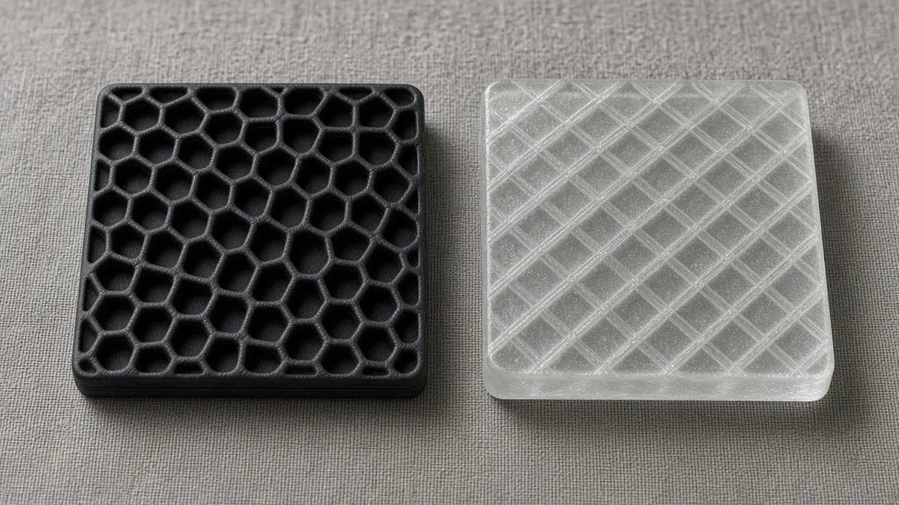

What ML-KEM, ML-DSA and SLH-DSA each do in NIST's post-quantum standards
Short answer: The three post-quantum standards NIST finalized in August 2024 do different jobs. FIPS 203, ML-KEM, is for agreeing a shared secret key. FIPS 204, ML-DSA, is the primary standard for digital signatures. FIPS 205, SLH-DSA, is a second signature method, built on different mathematics, which NIST describes as a backup.
A key-encapsulation mechanism lets two parties derive a shared secret over a public network. NIST says ML-KEM, taken from the CRYSTALS-Kyber submission, is the main standard for general encryption, citing comparatively small keys and speed. ML-DSA, from CRYSTALS-Dilithium, is for signatures that tie a message to a signer and show whether it was changed. SLH-DSA, from SPHINCS+, is also a signature scheme. NIST says it uses a different mathematical approach from ML-DSA and is there as a backup should a weakness in ML-DSA turn up.

The Secretary of Commerce approved FIPS 203, 204 and 205, and the Federal Register notice (89 FR 66052) makes them effective on 14 August 2024. NIST's news post of 13 August 2024 said the documents include the algorithms, instructions for implementing them and the uses they are meant for, and that they were ready to use. Dustin Moody, who leads the project, said "full integration will take time."
In 2022 NIST selected four algorithms to standardize: CRYSTALS-Kyber, CRYSTALS-Dilithium, SPHINCS+ and FALCON. The 13 August 2024 news post said a fourth draft, based on FALCON and to be named FN-DSA, was planned for late 2024. Checked again on 21 November 2026, that post still describes the three finished standards as the ones to start using, and later standards as backups. The IR 8547 PDF, opened the same day, still says NIST is developing a FIPS for a signature algorithm derived from FALCON. Table 5 of that report recommends ML-KEM-768 as the default parameter set, for a large security margin at a reasonable performance cost, and lists that set at 192 bits of classical strength, security category 3. The same section says HQC was selected as an alternative and that a FIPS for it is still under development, so ML-KEM is, for now, the only approved post-quantum public-key key-establishment scheme. The CSRC project page, also opened 21 November 2026, lists FIPS 203, 204 and 205 as the standards in hand and says the Falcon and HQC standardization processes are still underway.
The 2030 and 2035 dates are in PhotonDispatch's report on IR 8547, which was rechecked on 20 November 2026. Why the key-establishment piece shows up in TLS is the practical reading of FIPS 203. What HQC is and where FN-DSA stands cover the two standards that are not finished. Harvest now, decrypt later is the reason the August 2024 post tells administrators not to wait. A later industry story, Liquid C2 and Graphiant's managed network service (16 November 2026), says it uses post-quantum cryptography. The release does not name ML-KEM.
NIST says the new algorithms rest on math problems intended to resist both conventional computers and quantum computers, unlike factoring and discrete logarithms, which underlie widely used schemes such as RSA and elliptic-curve signatures. The agency describes the three 2024 standards as the primary tools for general encryption and for signatures, and says further algorithms are backups rather than a reason to wait.
Sources
- NIST: NIST releases first 3 finalized post-quantum encryption standards (13 Aug 2024)
- Federal Register: 89 FR 66052, FIPS 203, 204 and 205 effective 14 August 2024
- NIST IR 8547 PDF: Transition to Post-Quantum Cryptography Standards (October 2026), Table 5
- NIST CSRC: Post-Quantum Cryptography project page